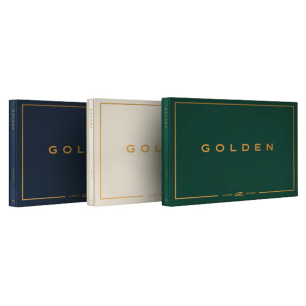

En julio de 2023, Jungkook habló a la revista Variety sobre su primer álbum como solista, diciendo que se encontraba trabajando en ello pero que aún era muy temprano para "mencionar algo específico" en el momento. Ese mismo mes, publicó el sencillo "Seven" con la rapera estadounidense Latto, el cual debutó en la puesto número uno de la lista Billboard Hot 100 y alcanzó el top 10 en varios otros países. Jungkook publicó otro sencillo, "3D" junto con el rapero estadounidense Jack Harlow, el 29 de septiembre.
Big Hit Music anunció el álbum compuesto por 11 temas el 3 de octubre, el cual incluye los sencillos ya publicados "Seven" y "3D". Golden toma su tema de los "momentos dorados" de Jungkook como solista. En un comunicado de prensa, se informó que el título del álbum está relacionado con el apodo que RM, el líder de BTS, le otorgó a Jungkook: "Golden maknae" (maknae dorado), refiriéndose a su estatus como el miembro más joven de BTS con un "timbre único que cautivará a sus oyentes a nivel mundial". Para la promoción del álbum, Jungkook realizó presentaciones especiales en los Estados Unidos y en Corea del Sur. La lista de canciones se dio a conocer el 15 de octubre.

CANCIONES DEL ÁLBUM
- 3D (feat. Jack Harlow)
- Closer to You (feat. Major Lazer)
- Seven (feat. Latto) (Explicit Ver.)
- Stanging Next to You
- Yes or No
- Please Don't Change (feat. DJ Snake)
- Hate You
- Somebody
- Too Sad to Dance
- Shot Glass of Tears
- Seven (feat. Latto) (Clean Ver.)
Jungkook participó en todo el proceso de producción del álbum, seleccionando sus temas con la mayor diversidad posible de influencias con vistas expandir su universo musical, según la agencia.
Jungkook aspira ahora a interpretar temas en vivo de su nuevo álbum en tantos escenarios como sea posible así como a continuar experimentando con nuevos géneros, según BigHit.
También se pronunció sobre el esperado regreso de BTS a la actividad musical después de que el grupo anunciara en 2022 que se tomaba un descanso al menos hasta 2025.
"Creo que nos hemos hecho más fuertes en muchos sentidos durante el proceso de sacar adelante nuestros proyectos en solitario. Solo puedo garantizar una cosa: si BTS volvemos juntos en 2025, será verdaderamente increíble" , señaló el artista.
ESCÚCHALO EN:


DE VENTA EN: